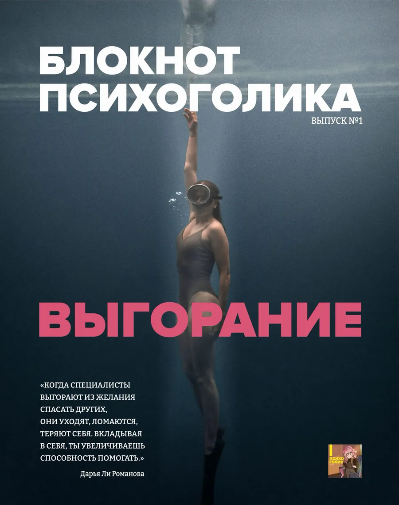

Выпуск №1
Выгорание
Онлайн — ноябрь 2025 · печать — 20 февраля 2026
«Когда специалисты выгорают из желания спасать других, они уходят, ломаются, теряют себя. Вкладывая в себя, ты увеличиваешь способность помогать».Дарья Ли Романова